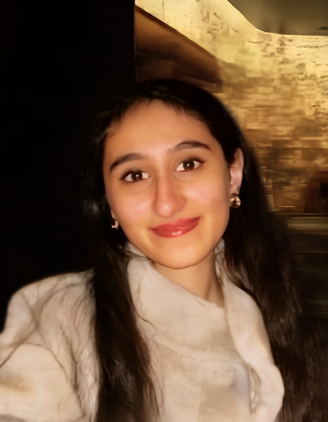
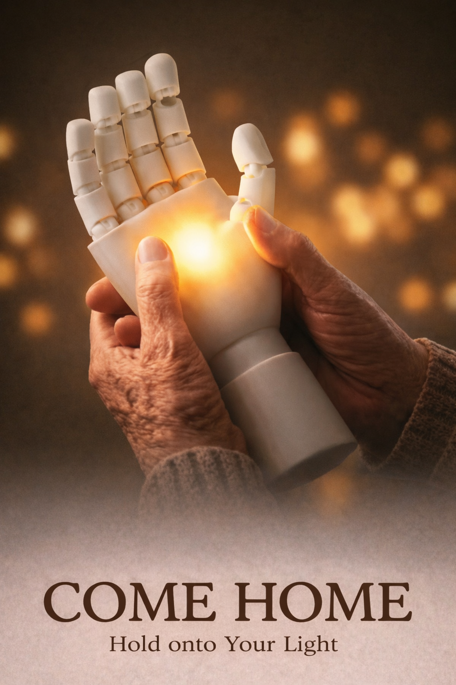

I am a rising junior studying Industrial and Product Design at Pratt Institute, New York, with a minor in UI/UX. I founded the Virtual Reality Design Society at Pratt and sit on the Student Government Association as Chair of Student Life.
I came to Harvard's PHYS70 to dive deeper into digital fabrication and to quench my curiosity and passion for making things to change the world for better. In short, I am here to fulfill my childhood dream! I'm interested in biomedical devices, mobility, wearable technology and aeronautical design. So if any of that resonated with you, let's connect!

Biomedical Design · Wearable Technology · Design for Care
Hold onto Your Light
Come Home is an interactive sensory comfort light designed for people living with dementia. When held, it gently lights up and gradually warms, responding to touch and encouraging sensory engagement, while quietly monitoring heart rate, blood pressure, oxygenation, and posture.
It explores how assistive technology can support emotional wellbeing and compassionate caregiving without constant surveillance, prioritising dignity, emotional comfort, and independence.
Dignity · Emotional Comfort · Independence
Pratt Institute — B.S. Industrial & Product Design, Minor in UI/UX
Expected 2028 · GPA 3.9/4.0 (President's List)
Harvard School of Continuing Education — PHYS70: Introduction to Digital Fabrication
Summer 2026
Proficiency
Python, Arduino, SQL, HTML, CSS, C++, JavaScript,Excel
Design Tools
SolidWorks · Rhinoceros · Adobe Creative Cloud · Fusion 360 · Autodesk Maya · Substance Painter · Final Cut Pro · Premiere Pro · Audacity
Founder & President — Virtual Reality Design Society
Pratt Institute · 2025–present · New York, USA
Chair of Student Life — Student Government Association
Pratt Institute · 2025–present · New York, USA
Programming Director — AIGA
Pratt Institute · 2025–present · New York, USA
Participant — Honda R&D Sponsored Workshop
New York, USA · 2026
Undergraduate Research Assistant — UX R&D
Pratt Institute · 2025